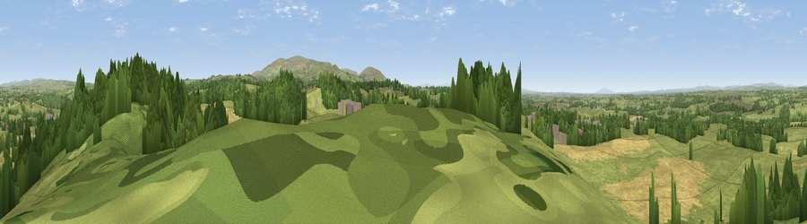

Viewpoint near Brampton
#9082 in England · top 28% of its area beats it · near Brampton · access?Where it is
The exact computed spot (NY 53825 61825). Click the marker for map links.
Public access: no public right of way or access land is recorded at this exact spot — it may be on private land. Computed from Natural England's CRoW access layer and OpenStreetMap rights of way — not the legal definitive map. Always verify locally.
The view, rendered

A 360° render of this exact spot computed from the terrain model, tree cover and land cover — summer colours, afternoon light, calibrated against photographs of famous viewpoints. Real trees, hedges and buildings will differ in detail.
The panorama
Grey silhouette: terrain skyline in each direction (720 bearings, Earth curvature and refraction included). Dashed green: skyline with trees (+15 m) and buildings (+8 m) as obstacles. Blue strip: how far the ground is visible on each bearing.
Where the view opens
Wedge length = distance to the farthest visible ground on that bearing (vegetation-aware). Rings at 10, 25 and 50 km.
What fills the view
62% grassland · 22% woodland · 13% cropland · 2% built-up
Angular shares of the visible panorama (visual magnitude), not map area. Landscape diversity 0.43 (0–1 Shannon).
Key numbers
More beautiful places nearby
The staircase of upgrades: each row has a higher view potential than everything closer. Driving times are estimates from straight-line distance, calibrated against real road routing — check an actual route before setting out.
| Place | Direction | Drive | Score |
|---|---|---|---|
| Viewpoint near Brampton | SW · 1 km | ~2 min | 67.3 |
| Viewpoint near Hallbankgate | E · 5 km | ~11 min | 67.5 |
| Whinny Fell | SE · 5 km | ~12 min | 74.2 |
| Viewpoint near Farlam | SSE · 6 km | ~13 min | 76.5 |
| Viewpoint near Castle Carrock | SSE · 9 km | ~17 min | 76.9 |
| Viewpoint near Cumrew | SSE · 10 km | ~19 min | 78.8 |
| Barrock Fell | SSW · 16 km | ~28 min | 81.1 |
| Viewpoint c11995_7247 | NNE · 39 km | ~58 min | 82.1 |
54.94893, -2.72244 · source: screening · position refined by local search. Computed location — check access rights before visiting.